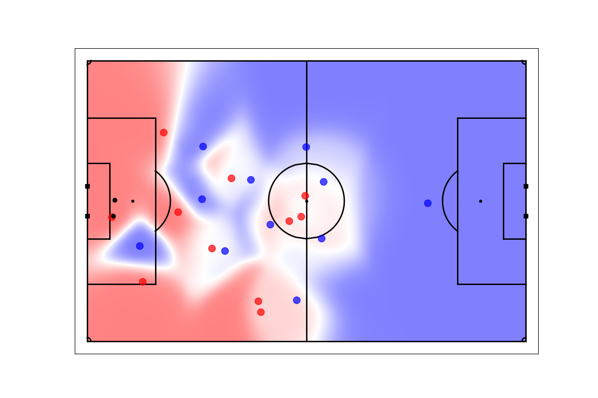

Example: Calculate and Visualize OBSO
To calculate and visualize the Off-Ball Scoring Opportunity (OBSO) [Spearman, 2018] using the Space_Model, you can utilize the following code snippets.
Calculate OBSO
from spaceeval import Space_Model
event_path = './event'
home_tracking_path = './home_tracking'
away_tracking_path = './away_tracking'
out_path = './'
model = Space_Model(space_model='soccer_OBSO',
event_data=event_path,
tracking_home=home_tracking_path,
tracking_away=away_tracking_path,
out_path=out_path)
model.get_obso()
Visualize OBSO
After calculating OBSO, you can visualize it. Here’s how to do it:
from spaceeval import Space_Model
event_id = 8
events_data = './event/event_data_10502.csv'
tracking_home = './home_tracking/home_tracking_10502.csv'
tracking_away = './away_tracking/away_tracking_10502.csv'
ppcf= './obso/10502_PPCF_dict.npy'
out_path = './'
model = Space_Model(space_model='soccer_OBSO')
model.vis_obso(event_id=event_id,
events_data=events_data,
tracking_home=tracking_home,
tracking_away=tracking_away,
PPCF=ppcf,
out_path=out_path
)
Example Visualization
The Visualization results for the OBSO should look like this:
{kind=link}